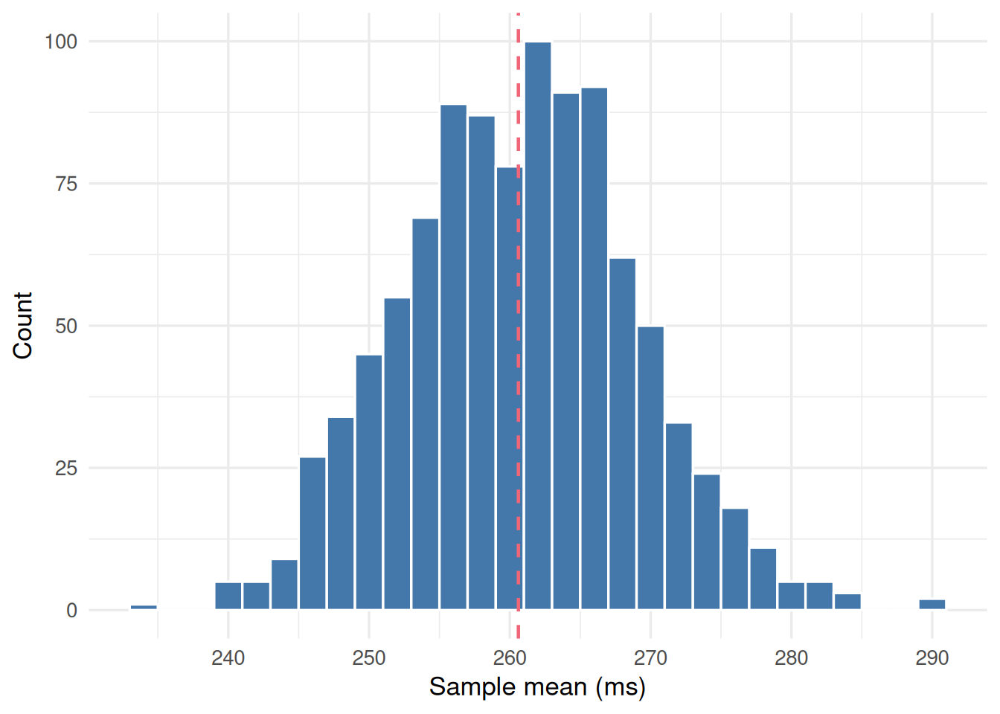
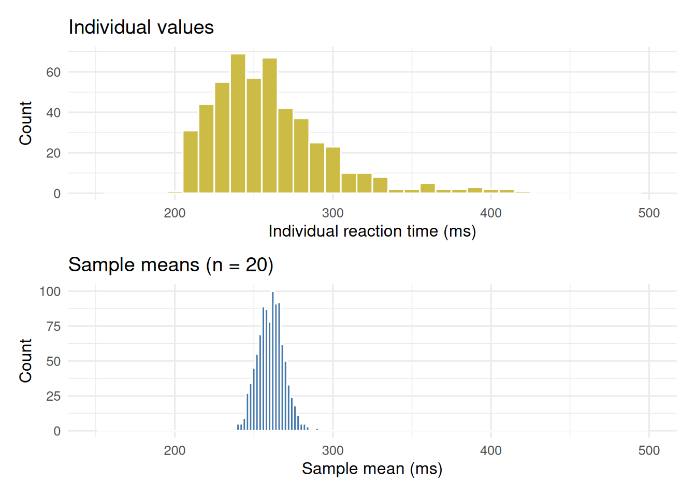
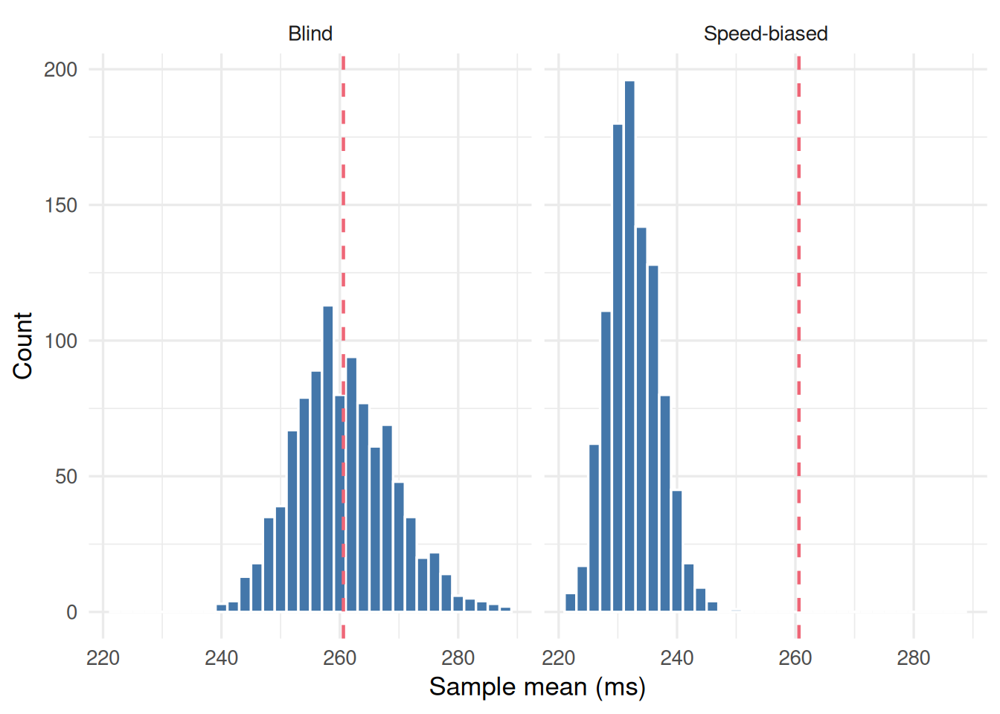

Simulating sampling distributions
This session reproduces what you did with the class reaction-time sheet, then extends it. The simulated population is a class of 500 students rather than 30, which lets us take many more samples than the room allowed.
Reproduce the draw in code
The code below draws a random sample of 20 students from the population and computes the mean of their reaction times. In the workshop you used 6; we start with 20 here and change it later.
Task: predict, then run
Read the code below. Before you run it, predict: will the sample mean be exactly equal to the population mean? Write your prediction down.
Now repeat the draw many times and collect the means. This builds the same distribution you saw on the board, but with more repetitions.
sample_means <- replicate(1000, {
s <- sample(rt_population, size = 20)
mean(s)
})
ggplot(tibble(sample_mean = sample_means), aes(x = sample_mean)) +
geom_histogram(binwidth = 2, fill = "#4477AA", colour = "white") +
geom_vline(
xintercept = pop_mean,
linetype = "dashed", colour = "#EE6677", linewidth = 0.8
) +
labs(x = "Sample mean (ms)", y = "Count") +
theme_minimal(base_size = 13)
Task: change the sample size
In the code above, change size = 20 to size = 50.
Before you run it, predict: will the histogram get wider, narrower, or stay the same? Run the code and check.
Now change it to size = 6, the sample size you used in the workshop, and compare the width with the spread of means on the class board.
Axis exercise
The figure below shows two histograms. One shows the distribution of individual reaction times (all 500 students in the population). The other shows the sampling distribution you just built.

Task: read the axes
Look at Figure 2 and answer the following questions.
- On the top histogram, what does one bar represent?
Each bar is a count of individual students whose reaction time falls in that range. One “observation” on this histogram is one student.
- On the bottom histogram, what does one bar represent?
Each bar is a count of sample means that fell in that range. One “observation” on this histogram is the mean of a sample of 20 students — not a single student.
- Why is the top histogram wider than the bottom?
Averaging 20 students reduces the variability. Extreme individual values are diluted by the other 19 students in the sample. The distribution of means is always narrower than the distribution of individual values.
Generalise beyond the mean
The sampling distribution idea is not special to the mean. Any statistic computed from a random sample is itself random.
Task: one-word edit
In the sampling distribution code from Reproduce the draw in code, change mean(s) to median(s). Run the code. The histogram you see is the sampling distribution of the median. The shape may differ from the mean’s, but the principle is the same: a statistic varies from sample to sample.
Bias contrast
Task: predict before you look
Suppose that entering a score on the class sheet had been optional, and students were more likely to enter it the faster it was (because those are the scores people are pleased with).
Write down your prediction: will the distribution of sample means shift left, shift right, or stay in the same place?
The code below simulates both a blind draw and a speed-biased draw. In the biased version, each student’s probability of being selected falls off steeply with their reaction time, so fast students are drawn far more often than slow ones.

Task: interpret the contrast
Look at Figure 3. The dashed line is the population mean.
Which draw produces a sampling distribution centred on the population mean?
Which problem — imprecision or bias — is visible in the speed-biased panel?
If you increased the sample size from 20 to 200, would the bias in the right panel disappear?
Bias is a property of the sampling method, not the sample size. Drawing 200 students with a preference for fast ones still underestimates the mean. More data make the estimate more precise (the histogram gets narrower) but do not correct a systematic error in how the sample was collected.
The code that generates the blind draw is:
The biased draw adds prob = exp(-rt_population / 25), which weights selection heavily towards faster students:
Task: read the code
Compare the two code blocks above. The only difference is the prob argument. State in one sentence what that argument does and why it creates bias.
Use R’s inbuilt help functions first trying typing help(sample) or ??sample into the Console
The prob argument makes each student’s probability of selection decrease steeply with their reaction time, so faster students are drawn far more often. This shifts the sampling distribution below the true population mean — the same effect as a sheet that only the students with fast scores bothered to fill in.
Stretch: the generating process (optional)
So far the population has been a fixed sheet of 500 students. But in practice you rarely know every member of the population. Instead you assume the data come from a process described by a distribution.
Task: swap the population for a process
The code below plots the distribution of individual values from the reaction-time sheet. Change rt_population to rexp(500, rate = 1) and run it.
- Are the individual values normally distributed?
Now make the same substitution in the sampling distribution code from Reproduce the draw in code: replace sample(rt_population, size = 20) with rexp(20, rate = 1).
- Is the sampling distribution of their mean approximately normal?
The same substitution in two places, and two histograms to compare. The individual values are strongly right-skewed, but the means pile up into an approximately normal shape. Session 2 names this result.
Exit ticket
Task: exit question
Write your answer on paper before you leave. This question is deliberately unanswerable from today’s material alone — we will pick this up next time.
You have one sample mean of 272 ms from 6 students. What else do you need before you can say how far this is likely to be from the population mean?
Reading
Covers what a sampling distribution is, uses a repeated-sampling simulation with apples, shows histograms of sample means, and demonstrates how the distribution changes with sample size.